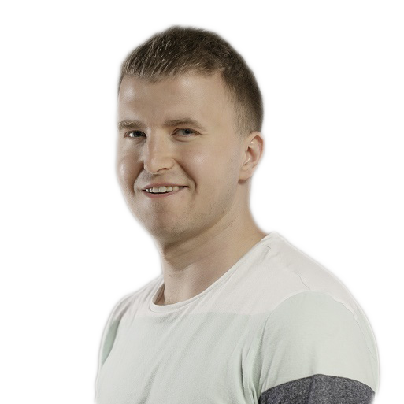

O mnie

Nazywam się Andrzej Krupowicz i mieszkam w Warszawie. W 2017 roku przystąpiłem do szkolenia online Bootcamp Front-End Developer. Niestety z przyczyn osobistych przerwałem naukę. Po 3 latach przerwy postanowiłem wrócić do Front-Endu. Obecnie skupiam się na doskonaleniu swoich umiejętności w środowisku JavaScript. Moim głównym celem jest znalezienie pracy, która da mi możliwość rozwoju. Jestem osobą kreatywną, staranną i amibitną. W dotychczasowym życiu zawodowym zajmowałem się głównie rozwiązywaniem problemów.